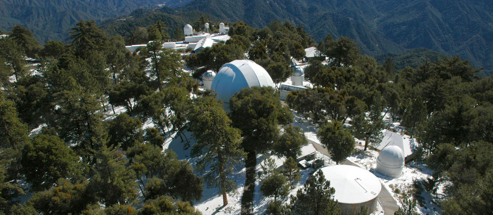

About Me
Education: Ph.D. in Astronomy at Georgia State University, M.S. in Physics at University of Arkansas, B.S. in Physics at Guilford College
Research Interests: Massive stars, stellar parameters and evolution, optical interferometry
Publications: Research Gate
Research

Fundamental Properties of O and B Stars with Optical Interferometry
Many of the fundamental properties of early type stars, such as effective temperature, radius and age, are often estimated from theoretical models of their colors and spectra, because these properties are difficult to measure directly. Long-baseline optical interferometry affords us the opportunity to measure directly the angular size of stars, including O- and B-type stars. This can be combined with a known distance to provide a measurement of the physical size of a star that is independent of models. Our interferometry is combined with spectrophotometry to obtain estimates for the effective temperatures of our sample stars. With a known radius and temperature, we can place our stars on an observational H-R diagram.
My research makes use of the Center for High Angular Resolution Astronomy (CHARA) Array at the Mt. Wilson Observatory in California. The CHARA Array is an optical interferometer composed of six 1 meter telescopes arranged in a Y-shape configuration. Combinations of the telescopes allow for 15 different usable baselines ranging in length from 34 meters to 331 meters. Instruments called beam combiners combine and image the light from the telescopes. Several beam combiners operating in a range of wavelength regimes are installed at the Array. My dissertation work covered a survey of 31 O and B type stars but there are many more early type stars that can be observed with CHARA. It would be extremely useful to expand this survey to include more stars to give more statistical significance to our results.
Our paper on the O star results: Gordon, K. D., Gies, D. R., Schaefer, G. H., et al. 2018, ApJ, 869, 37 ADS link
Angular Sizes of B Supergiants
My original stellar sample contained one B supergiant and we found our observed size and derived effective temperature did not fit stellar atmosphere models well. However, these models do not account for effects from stellar winds which can be very important in supergiant stars. I plan to complete a survey of all B supergiant stars observable with CHARA to see if there is a trend apparent of the models fitting these stars poorly, and investigate if stellar winds could be the cause for the discrepancy
Imaging zeta Oph
zeta Oph is a rapidly rotating O-type star rotating at a vsini of 348 km/s. We were able to measure the rotational distortion in the shape of the star by observing on two nearly orthogonal baselines, but did not obtain closure phase data necessary for image reconstruction. Observing this star with the MIRC beam combiner at CHARA could let us image zeta Oph and possibly learn about the gravity darkening that must be present in such a rapidly rotating star.
Optical Spectrophotometry of Massive Stars
In order to derive effective temperatures from our measured diameters with CHARA, we must have good quality spectral data on each star covering as much of the wavelength spectrum as possible. The optical part of the spectrum is an important part of that, yet it is not very well studied for massive stars and there are not very many existed resources for databases of optical spectra for O and B type stars. I would like to create a library of optical spectra for hot stars as this would help with my current work and also be a valuable resource to the community. Most of these stars are very bright, so these observations would not require a very large telescope.
Variablitiy of Post-AGB Stars
Post-AGB stars are intermediate mass stars in the last phase of their life before becoming a planetary nebula. They are often surrounded by shells of dust and will pulsate, contracting and expanding, as they lose the internal balance between pressure and gravity. This pulsation can be observed by a fluctuating brightness of the star and can be investigated by forming a light-curve. We can use differential photometry to observe variability and micro-variability in post-AGB stars.
Contact
Email:
Address: